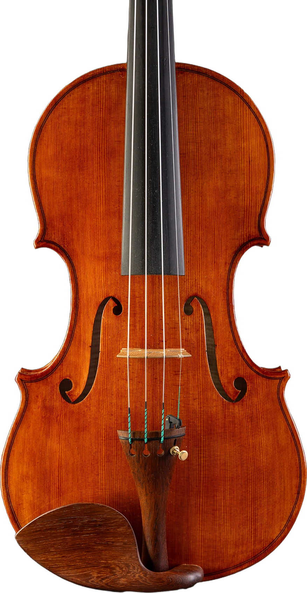
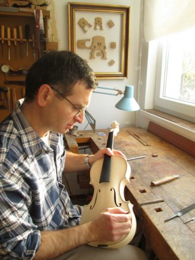
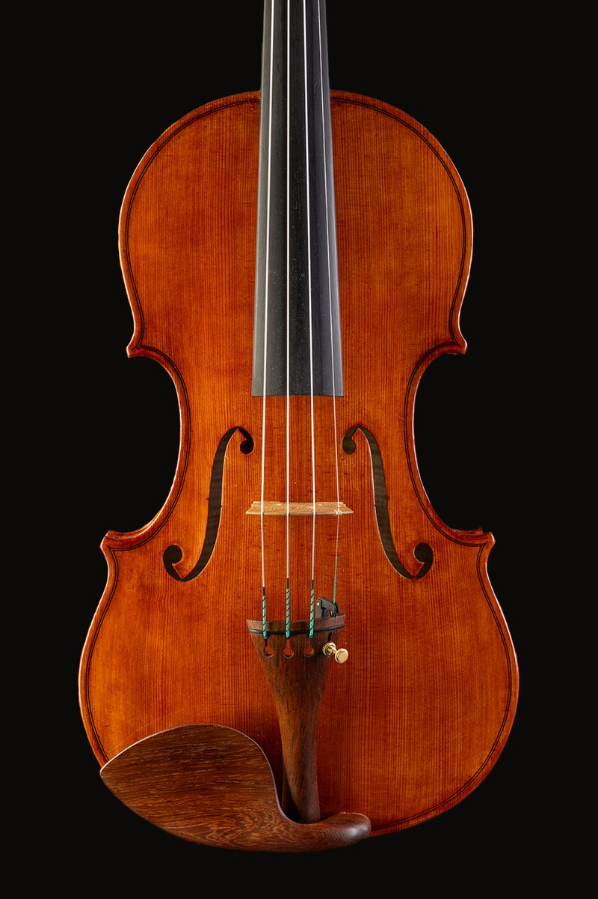
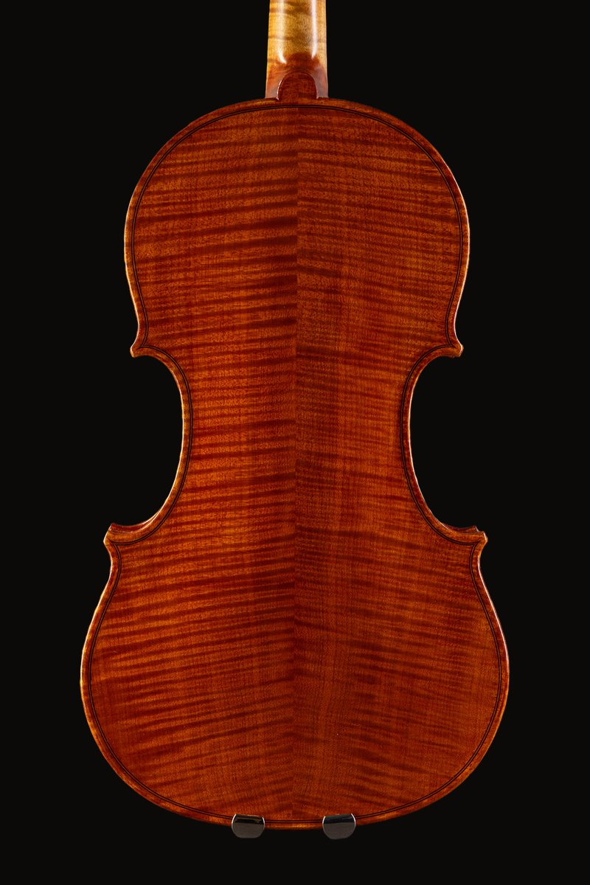
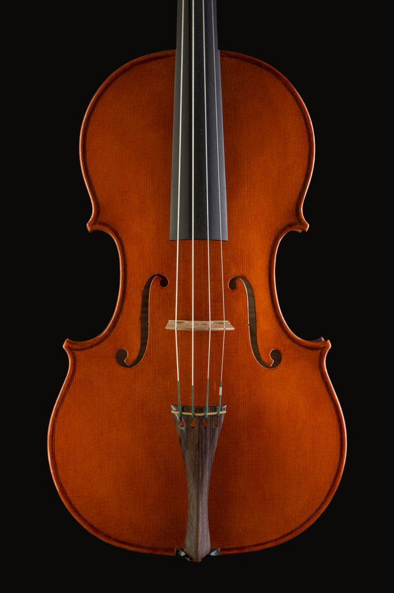
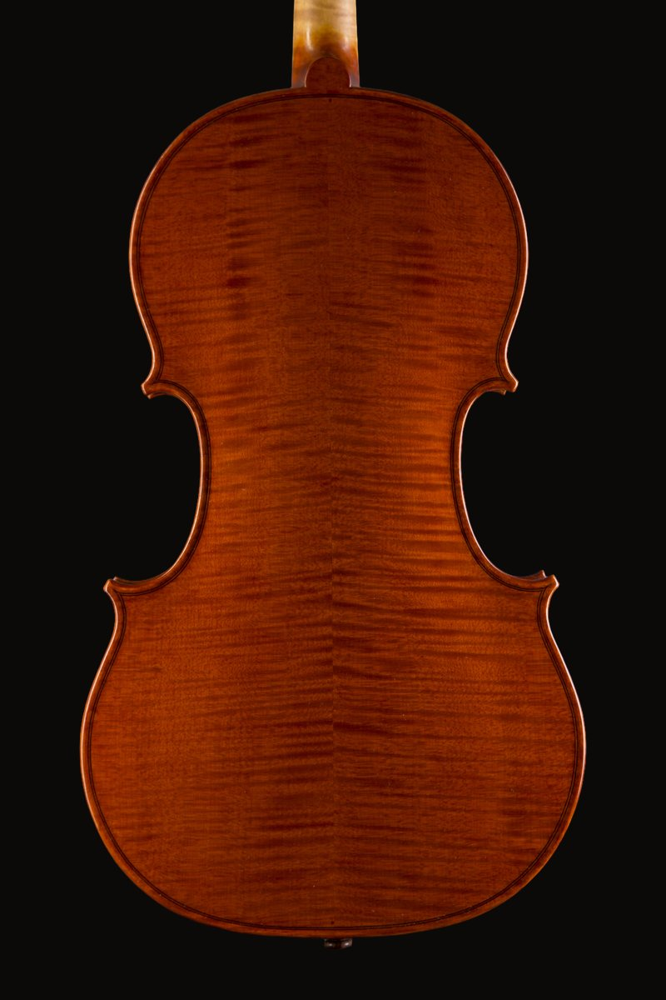
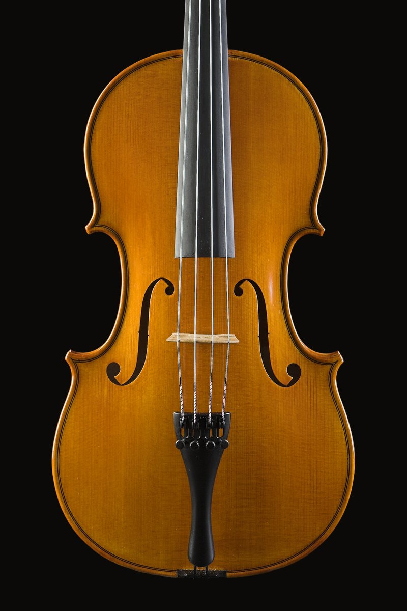
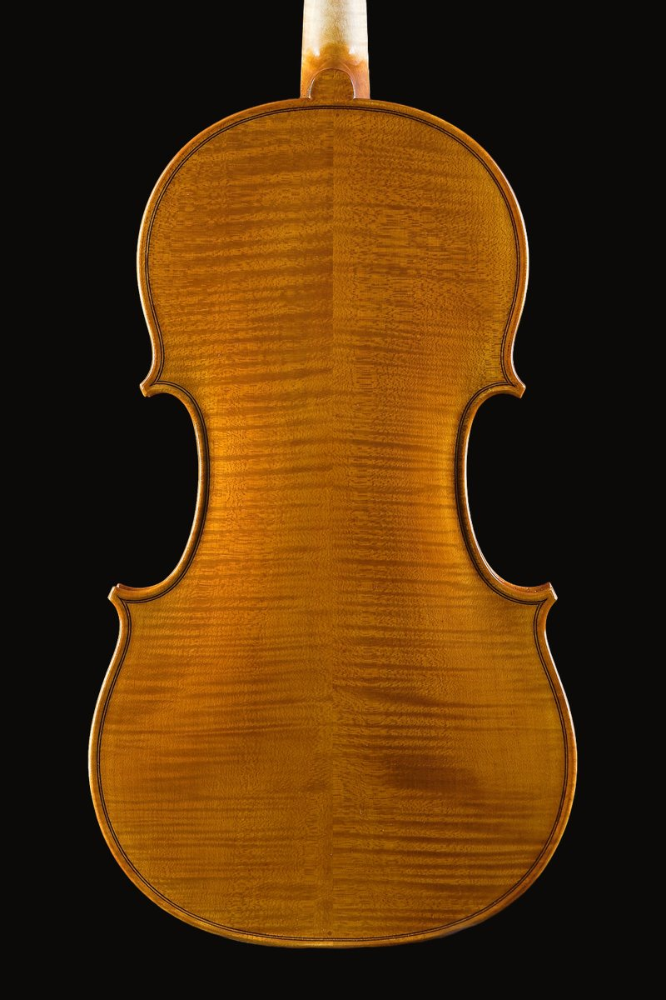

Stepan Demirdjian
Степан Демирджиян
Violin Maker · PlovdivЛютиер · ПловдивScrollПревъртете

About MeЗа мен
Master luthier from Plovdiv, devoted to the classical tradition and the pursuit of perfect sound. Over thirty years of experience in making violins and violas, as well as in the complete restoration of bowed string instruments and their bows.Майстор-лютиер от Пловдив, посветен на класическата традиция и съвършения звук. С над трийсет години опит в изработката на цигулки и виоли, както и в цялостната реставрация на струнни лъкови инструменти и техните лъкове.
InstrumentsИнструменти


Inspired by Stradivari, Stepan DemirdjianПо мотиви на Страдивари, Степан Демирджиян


Inspired by Guarneri, Stepan DemirdjianПо мотиви на Гуарнери, Степан Демирджиян


Viola 16″, Stepan DemirdjianВиола 16″, Степан Демирджиян


Viola 15.5″, Stepan DemirdjianВиола 15.5″, Степан Демирджиян
ContactКонтакти
Every instrument is agreed by phone or email — whatever suits you.Всеки инструмент се договаря по телефон или имейл — както Ви е удобно.
AddressАдрес99 Ruski Blvd, 4000 Plovdiv, Bulgaria
Instagram@stepandemirdjian
FacebookStepan Demirdjian